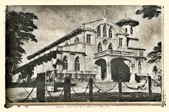
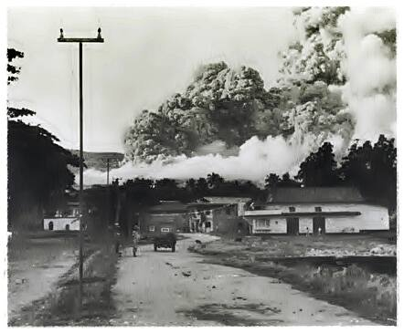
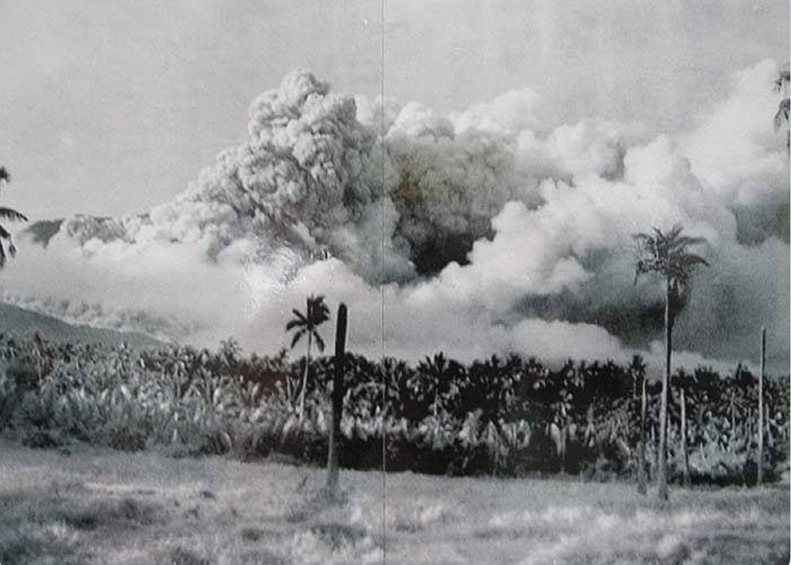
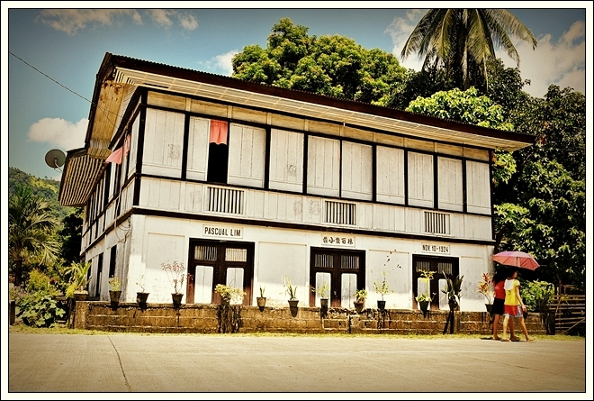
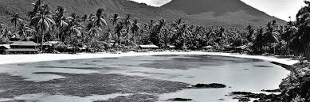

A Rich and Turbulent Past
Camiguin's history stretches back thousands of years, with early Austronesian settlers establishing communities along its fertile volcanic shores. The island came under Spanish colonial rule in the 16th century, and the influence of that era is still visible today in its centuries-old churches and ruins scattered across the island.
Perhaps the most dramatic chapter in Camiguin's history occurred in 1871, when catastrophic volcanic eruptions from Mt. Vulcan reshaped the island's geography entirely. An entire town — including its church and cemetery — was swallowed by the earth and sea, creating the iconic Sunken Cemetery that exists today.





Pre-Colonial Era
Indigenous Austronesian communities thrived on the island long before Spanish contact, living off the sea and the fertile volcanic soil of Camiguin's interior.
Spanish Colonial Period
Spanish missionaries arrived in the 1600s, establishing churches and converting the local population. Several of these colonial-era structures still stand as historical landmarks today.
The 1871 Eruption
Mt. Vulcan's eruption caused massive destruction, sinking the old town and its cemetery into the sea — events that permanently changed the island's landscape and identity.